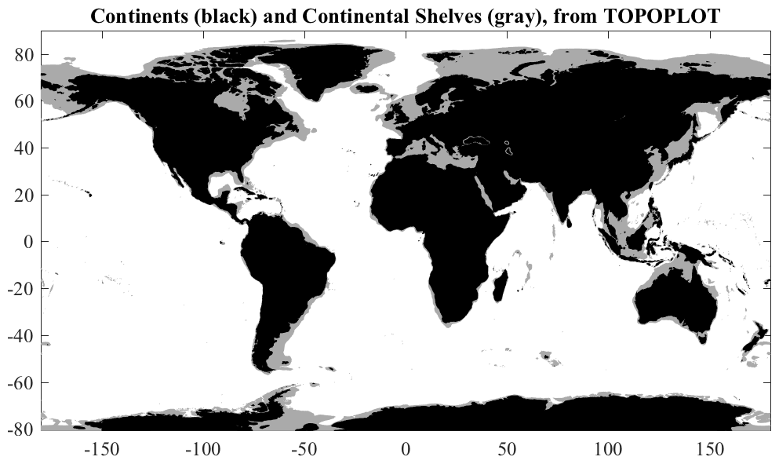

TOPOPLOT Plot regional or global topography at one-sixth degree resolution. __________________________________________________________________  __________________________________________________________________ TOPOPLOT with no input arguments makes a patch plot of the earth's surface topography within the axis of the current plot. Continents are black and the continental shelf to a depth of 500~m is gray. TOPOPLOT CONTINENTS plots the continents only as a patch plots with the continents in black. If the current plot is empty, TOPOPLOT uses the domain -180 to 180 degrees in longitude, and -80.666 to 80.666 degrees in latitude. These two options use PATCHCONTOURF, which does not use the current colormap and so allow one to allow plot a colored field in addition to the topography. The remaining options use CONTOURF. The patches will be set to have negative ZData, in order to appear below other items on the plot. __________________________________________________________________ TOPOPLOT(REGION,V) makes a filled contour plot of the earth's surface topography within a region specified by REGION, at contour intervals V. REGION is an array with the format [WEST EAST SOUTH NORTH]. Longitudes may either be specified on the interval [-180, 180] or on [0, 360]. V is an array of contour levels, in kilometers, with positive values for heights above sea level and negative values for below sea level. By default, TOPOPLOT uses a flipped grayscale colormap, with high elevations colored dark gray, and low elevations colored light gray. TOPOPLOT uses CONTOURF with the contours themselves not shown. TOPOPLOT uses the one-sixth degree resolution topography file JTOPO.MAT included with JLAB, based on the Smith and Sandwell dataset. The latitude range +/- 80.666 is covered. Type 'help jtopo' for details. TOPOPLOT(REGION) with V unspecified uses V=[0 -1/2 -1], showing the continents in black and the contintental shelf at 500 m depth in gray. To plot the continents in black, use TOPOPLOT(REGION,[-1/2 0]). TOPOPLOT([],V) sets REGION to the axis limits of the current plot. __________________________________________________________________ Additional options TOPOPLOT(REGION,V,VC) additionally draws the individual contour levels in VC, with the color shading still based on the array V. TOPOPLOT(REGION,[],VC) draws only the contours in VC, with no shading. By default, these will be drawn as heavy white lines. TOPOPLOT(REGION,V,VC,STY) uses linestyle STY for the individual contour levels. STY is in LINESTYLE form, e.g. STY='2g--'. [H,HC]=TOPOPLOT(REGION,V,VC) returns the handles to the contours corresponding to levels V and VC, respectively. TOPOPLOT(...,'M_MAP') will work with Rich Pawlowicz's M_MAP package by calling M_CONTOUR and M_CONTOURF. __________________________________________________________________ See also JTOPO, REGIONPLOT, READTOPO. 'topoplot --f' generates the above sample figures and some others. Usage: topoplot(region,v); topoplot(region,v,'m_map'); [h,hc]=topoplot(region,v,vc); [h,hc]=topoplot(region,v,vc,'2m--'); [h,hc]=topoplot(region,v,vc,'2m--','m_map'); __________________________________________________________________ This is part of JLAB --- type 'help jlab' for more information (C) 2013--2016 J.M. Lilly --- type 'help jlab_license' for details